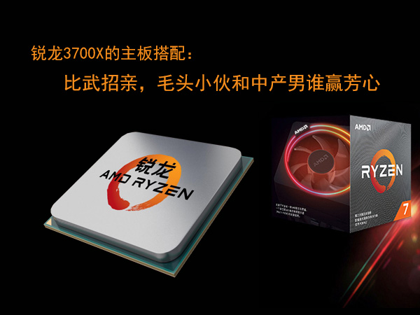
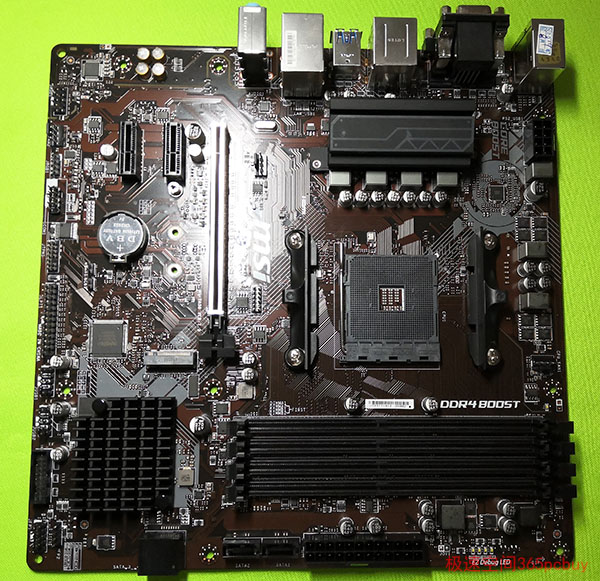
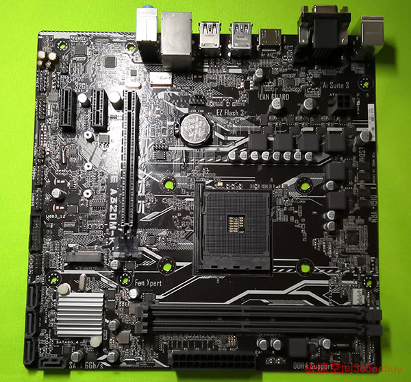
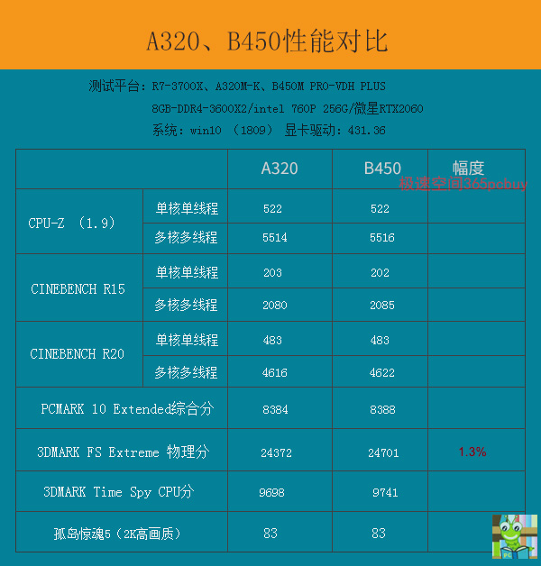
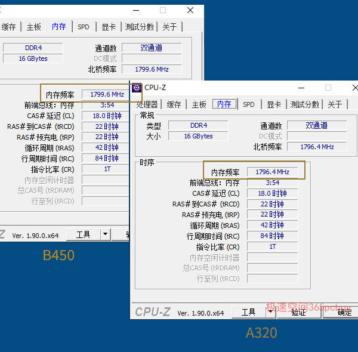
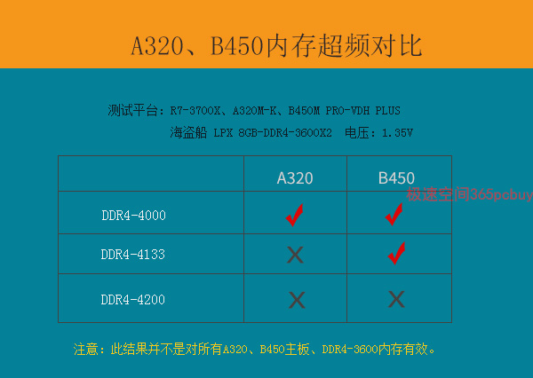
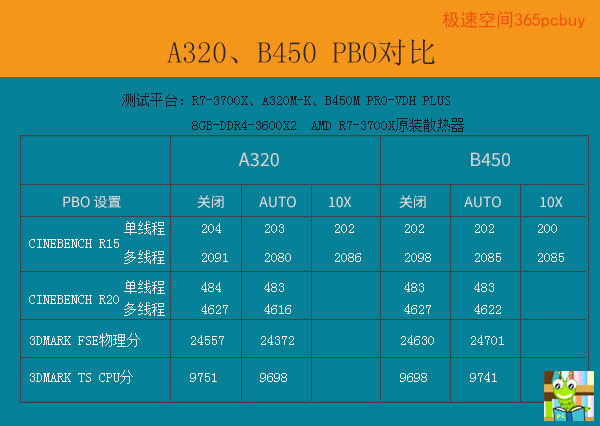

同样999元,GTX1650和RX580 2048SP性价比谁更好？买显卡还需考虑5个隐藏成本
发表时间：2019-11-10 文章浏览次数：2165 作者：pc小虫
前言
远而望之，皎若太阳升朝霞；迫而察之，灼若芙蕖出渌波......锐龙3700X大美人要比武招亲，这消息如同一枚核弹，冲击波瞬间覆盖了整个城市。X399起了个大早，准备去秀一波四通道功夫，刚出了大门就遇到X570。
X399：“听说A320那小子和你比了一场，还输了？这不可能啊！”
X570长叹一口气：“哎！出了点岔子，实际也算个平手。”
X399：“那怎么判你负？”
X570：“你有所不知，按规则，功夫一样的情况，就比颜值、身材、比潜力、比品德。”
X399：“那你哪点不如他？”
X570无奈地说：“哥，这事说来有点霉，上周三晚上在街口玩漂移，撞坏了个电桩，赔了1万多，就这么点钱她就说我是个败家仔。怎么，你想去试试？”
X399咽了一下口水：“碰碰运气而已。”
X570哈哈大笑：“你没睡醒吧！虽说是公开比武，实际只有7个人有资格：A320、B350、X370、B450、B550、X470和我，而B550还在读幼儿园，这么大冷的天，你还是回家抱住嫂子会热和点！”
X399一听，面如土灰：“她，我躲还来不及呢！”
“怎么了?”
X399长叹一声："她现在练功走火入魔，嗓子也嘶哑了，韧带也撕裂了，见人就要逼人比武，经常把对手打的遍体鳞伤，衣衫破裂，江湖人称`撕裂者`。"

正文
从理论上说，X570由于练过PBO内功（注1），在搭配带X的处理器时候，CPU性能发挥将会比A320性能高大约2~3%。但是，在上次的比武中，X570却意外地输了，而且幅度达到了3.4%（注2），这明显讲不通。
为了进一步研究这一问题，此文将用A320M（带M.2）和B450M实测对比，帮助R7-3700X寻找如意郎君。

微星B450M PRO-VHD PLUS，具备四根内存插槽，带PCI-E钢铁装甲，MOS覆盖了散热片，身材虽然算不上健硕，还算匀称。

华硕A320-K，身体瘦小，矮了半个头。
知彼知己，百战不殆。B450M在来之前，就把另外六个对手做了详尽分析——
X470、X570两兄弟是公子哥儿，游手好闲，经常到公园遛鸟，大美人多半对之不感冒，B350和X370的年龄大了些，B550正在唱儿歌，A320其貌不扬，也不会超频和PBO内功，这次比武基本上十拿九稳。眼睛一闭，仿佛感到美人已经倒进了怀里。
裁判宣读规则：
1、为确保公平，硬盘、内存、显卡完全一样。
2、性能比赛分值差距2%以内算平手。
3、增加三个附加赛：温度、内存超频和PBO。
B450一听，心里一阵奇怪，PBO这项功夫在本门中不是只传X470/X570和我吗？他没练过怎么打？这时，一个中年男子跳了上来，对B450耳语：“听说，A320已经偷学了PBO，小心点为妙。”
比武开始

六项理论，只有3DMARK FSE物理分略高一点点，在合理误差范围内，两人打平。B450并不泄气，因为他知道，自己的强项在附加赛上。

A320M-K刷到最新BIOS（5207版），支持DDR4-3600良好，注意，并不是所有A320都能支持高频内存。
附加赛1：内存超频

这项比赛没有悬念，B450小胜。A320虽败尤荣。实测未加电压。注：受个体差异，即使相同牌子型号的主板和内存，也不一定能达到4000MHz频率。
附加赛2：温度测试
采用AIDA64压力测试5分钟， 室温20度，开放式环境未装机，CPU/MOS管温度：
A320：82/51度
B450：77/49度
在压力测试中，A320的CPU电压会略高于B450，导致CPU温度略高，A320的MOS管没有散热片，温度高了一点，实属正常。
注：A320、B450都是AMD的主板芯片组，和供电本身并没有什么关系，只是由于定位不同，厂商通常会对高等级的芯片组主板，给予更好的供电设计。
温度测试B450小胜。
附加赛3：PBO
PBO（精确增压超频）是AMD七大武功之一，门派规定只有400系列以后的弟子（如B450/X470/B550/X570）才能学，之所以作这个规定，是因为PBO对供电要求较高，资质稍差的人，如果强行学习，极有可能走火入魔。虽有规定，但是由于没有相应的处罚条例，因此被A320钻了空子。目前，在微星、华硕的A320主板中，均可以找到这个设置。

第三场附加赛二者再次打平，而且无论关闭、开启自动还是10X极限模式，数值几乎相同。由此看出，两款主板的BIOS对锐龙三代的支持都不完美，PBO没有起作用。不仅如此，X570主板的PBO也没有起到作用，远不如使用锐龙7-2700X这般明显。
分析原因如下：
近日，曝出AMD三代锐龙处理器存在睿频bug，德国超频高手在调查了2700多位用户后发现，AMD旗舰处理器锐龙9 3900X只有5.6％能达到宣传的加速频率（4.6GHz），引发争议。AMD发声明承认已经在固件中找到了一些问题，正在准备新的主板BIOS，将会解决加速不足的情况，并提供额外的加速性能优化，新版BIOS的发放时间将在2019年9月10日。
因此，目前宣称的睿频还达不到，PBO当然是后话了，吃饱穿暖都成问题，哪里敢奢望山珍海味。BIOS不给力，这就相当于废掉了B450的PBO内功，当然，A320也是白白偷学，空欢喜一场。
总结：
低端主板会导致CPU性能偏低？NO，由于PBO福利的消失（后期能否通过升级BIOS重显活力还很难说），相同的处理器，无论是用X570、B450还是A320，CPU的性能发挥“几乎完全一样”（注：高功耗CPU除外）。一般来说，R7-3700X门当户对的搭配是B450。但是，当你的预算非常紧张，又必须用八核十六线程处理器，锐龙3700X可以下嫁A320，A320的主要缺点一个是内存插槽偏少，仅两根，另一个是工厂对低端主板的重视程度不高，使用锐龙三代时，有的主板内存频率暂时还跑不到3000MHz以上。
（注：B450比A320还多个AMD storeMI，但此技术先天不足，并不如采用固态+机械双硬盘方案，用户极少，这里就不再探讨了。）
比赛结束了，两个人都非常优秀，从武功看，不相伯仲，大美人拿不定注意，跑去问苏妈。
苏妈说：“我已经找人调查过了，A320和B450人品都不错，从小学到高中都是三好学生，本科学历。A320工作努力，经常加班，通过打拼已经在成都买了房。”
苏妈接着说：“成都自古享有‘天府之国’的美誉，美食众多，麻婆豆腐，夫妻肺片，钟水饺、龙抄手.....嫁过去享口福哟！”
”B450是哪里人呢？“
苏妈一见女儿这么问，知道她的想法，微微一笑：”B450老家是燕郊的，只有四间砖瓦房.....”
"燕郊？"
“对，燕郊在北京七环上，他家正在拆迁，这就直接迈入中产阶级了啊！“
不久，裁判宣布：“此次比武，B450获得胜利！”
A320遗憾地长叹一声，大度地向对手表示祝贺。他哪里知道，在美人心里刚刚进行了另一场比赛，拼二代和拆二代的较量。